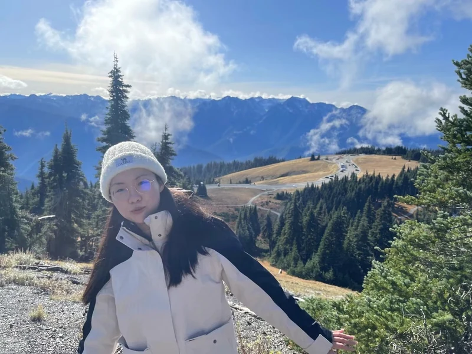

Under review
3D perception & embodied AI
Yi Zhang
I am a PhD student in the Department of Electrical and Electronic Engineering at The Hong Kong Polytechnic University, supervised by Prof. Lap-Pui Chau (IEEE Fellow). My research interests include image-based 3D perception and embodied artificial intelligence.
I received my B.Sc. in Computer Science from the Hong Kong University of Science and Technology in 2020, and my M.Sc. in Data and Artificial Intelligence from Institut Polytechnique de Paris in 2023.

Research
ORCID recordI study how images can support 3D scene understanding, with a focus on object detection, visual grounding, and Gaussian representations.
2026
SeqAlign3DVG: A Sequence-Aligned Benchmark and Voxel Reasoning Framework for 3D Visual Grounding
ACM Multimedia (ACM MM), 2026
An observation-aligned grounding benchmark and a voxel reasoning framework for single images and ordered RGB sequences.
GVSynergy-Det: Synergistic Gaussian-Voxel Representations for Multi-View 3D Object Detection
IEEE Transactions on Circuits and Systems for Video Technology (TCSVT), 2026
Combining Gaussian surface features and voxel context for multi-view 3D detection without depth or dense 3D geometry supervision.
MASS: Mesh-inellipse Aligned Deformable Surfel Splatting for Hand Reconstruction and Rendering from Egocentric Monocular Video
Computational Visual Media (CVM), 2026 · Journal Track
Mesh-aligned deformable Gaussian surfels for detailed hand reconstruction and rendering from egocentric monocular video.
2025
GaussianCross: Cross-modal Self-supervised 3D Representation Learning via Gaussian Splatting
ACM Multimedia (ACM MM), 2025
Learning 3D representations through Gaussian splatting and joint distillation of appearance, geometry, and semantics.
3DGeoDet: General-Purpose Geometry-Aware Image-Based 3D Object Detection
IEEE Transactions on Multimedia (TMM), 2025
Explicit voxel occupancy and implicit surface geometry improve 3D detection from single-view and multi-view images.
A Survey of Embodied Learning for Object-Centric Robotic Manipulation
Machine Intelligence Research, 2025
A review of embodied perception, policy learning, and task-oriented learning for object-centric robotic manipulation.
Service
Teaching assistant
The Hong Kong Polytechnic University
Reviewer
Conferences
- ACM Multimedia (ACM MM)
- AAAI Conference on Artificial Intelligence
Journals
- IEEE Internet of Things Journal
- IEEE Transactions on Cybernetics
- IEEE Transactions on Multimedia
- IEEE Transactions on Broadcasting